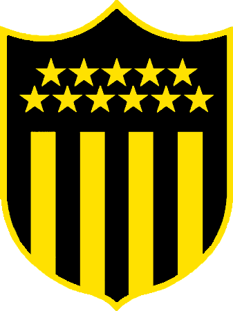

CLUB ATLETICO PEÑAROL
El Club Atlético Peñarol transita hoy sus 129 años de vida. Desde su creación bajo el nombre de "Central Uruguay Railway Cricket Club", fué conocido como Peñarol, en referencia a la zona de surgimiento de la Institución. En el año 1900 nuestra Institución fue una de las cuatro entidades que fundaron la "The Uruguay Association Football League", debutando en la primer competencia local oficial el 10 de junio de aquel año enfrentando al Albion, a quién derrotó por 2 a 1. El club del ferrocarril se adjudicó aquel primer campeonato, al igual que el de 1901, comenzando a forjar de esa manera la historia gloriosa que marcaría el destino del Club. El 12 de marzo de 1914 el "C.U.R.C.C." cambió oficialmente su nombre por el de "Club Atlético Peñarol". Esta reforma fue informada a "Liga Uruguaya de Football" el 14 de marzo, siendo aprobada por ésta y todos sus clubes asociados el 17 de marzo y así comunicado al Club por carta oficial. Finalmente, el 13 de abril de ese año el Poder Ejecutivo le otorgó la personería jurídica al club. Durante la era amateur Peñarol obtuvo 11 Campeonatos Uruguayos, siendo el de 1905 el único en la historia del país obtenido en forma invicta sin goles en contra. El de 1924 lo hubo en la "Federación Uruguaya de Football" constituída como consecuencia del cisma ocurrido en el fútbol del país en 1922 y que por el fallo arbitral conocido como "Laudo Serrato" -dictado el 9 de octubre de 1925 por el Presidente de la República- se uniera en absoluto pie de igualdad con la otra asociación formándose una nueva Institución que llevaría el nombre de "Asociación Uruguaya de Football" y que funcionaría a partir de 1927; siendo en el interregno regido el fútbol organizado en el país por el "Consejo Provisorio", que en 1926 organizó un Campeonato anual con el formato tradicional y entre todos los Clubes que por el aludido Laudo integraban la Primera División, el cual logró Peñarol sobre Wanderers -2º- y Nacional -3º-. Desde el inicio de la era profesional en 1932, Peñarol es uno de los dos únicos clubes que hasta la fecha han participado en cada una de las temporadas del Campeonato Uruguayo. Adicionalmente, Peñarol es el equipo uruguayo que acumula el mayor número de títulos de Primera División, con 40 conquistas entre 1932 y 2018, así como el club que en más oportunidades se coronó campeón de manera invicta durante el profesionalismo (1949, 1954, 1964, 1967, 1968, 1975 y 1978); siendo en total 11 los así obtenidos (con los de 1900, 1901, 1905 y 1907). Sus mejores participaciones fueron en los años 1949 y 1964, temporadas en las que finalizó el campeonato con 94,44% de los puntos ganados que se estuvieron en disputa. Peñarol es el club que ha ganado más campeonatos profesionales en Uruguay, con 40 torneos. Asimismo, considerando los torneos obtenidos en el período amateur, 1900 - 1931, es quien más campeonatos de Primera División ha ganado en la historia del fútbol uruguayo, sumando las eras amateur y profesional, con 51 títulos. En el ámbito internacional, fue el primer club en lograr la Copa Libertadores de América, haciéndolo de manera invicta en 1960. Peñarol ha sabido ganar la Copa Libertadores de América en cinco oportunidades, siendo el club uruguayo que lo ha conseguido en mayor cantidad de ocasiones, y es uno de los laureles que han colocado a los "carboneros" entre los clubes más gloriosos del continente. Asimismo, fue uno de los cinco clubes que obtuvieron en tres oportunidades la Copa Intercontinental, siendo el primero de éstos en conseguir tal marca. Para completar este extraordinario palmarés, se logró en 1969 la Supercopa de Campeones de América y en 1985 la Supercopa de Campeones Intercontinentales. En septiembre de 2009 fue declarado como el Mejor Club del Siglo XX de Sudamérica por la Federación Internacional de Historia y Estadística de Fútbol (IFFHS) con 531,00 puntos, superando la línea de Independiente de Argentina (426,50) y a su clásico rival en el fútbol uruguayo. Nombre Oficial: Club Atlético Peñarol Fundación: 28 de setiembre de 1891 Estadio: Campeón del Siglo Estadio: Cr. José Pedro Damiani (formativas) Presidente: Sr. Ignacio Ruglio Campo de entrenamiento: Washington Cataldi (“Los Aromos”) Sede: Palacio Peñarol- Cr. Gastón Guelfi